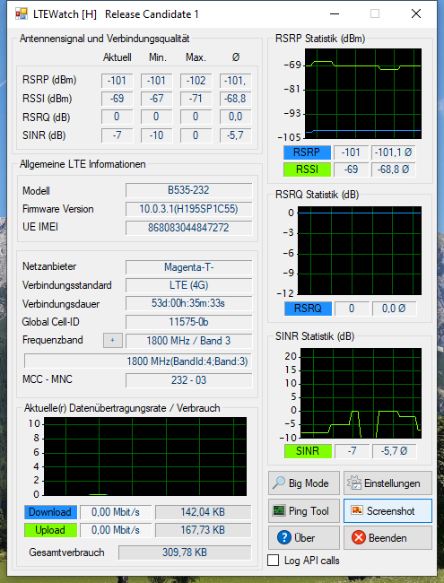

ich hab seit rund 2 Monaten den Flex Tarif von Magenta inkl.
Huawei B535-232 Router
. Nach rund 2 Monaten kann ich sagen dass ich mit dem mobilen Internet an sich
gar nicht zu frieden
bin... Statt den versprochenen
40 Mbit
Downloadrate krieche ich (fast) ganz egal um welche Uhrzeit immer bei rund
10-14 Mbit
herum obwohl ich auf dem Land lebe. Ausschlaggebend für den Wechsel zu Magenta war das mir das Hutchsion3-Internet mit rund 25Mbit zu langsam war....
Jetzt ist meine primäre Frage ob es in meinem Fall am WLAN oder schon an der niedrigen Signalstärke des LTE liegt? Und wenn es am LTE-Empfang liegt ob hier eine
externe Antenne
am Router Sinn macht oder nicht?
- Wenn ich mit der "Router Hilfe"-App das mobile Internet-Signal messen lasse liegt dieses bei
78-85 %
und er sagt mir "Sehr gutes Signal"...
- Das LTEWatch schaut so aus:
Was sagt ihr Profis? Kann es am LTE liegen oder ist das WLAN des Huawei-Routers so mies?
Laut Screenshot befindest du dich im meistens sehr ausgelasteten Band 20 (800MHz) . Ich tippe mal sehr auf einem Kapazitätsproblem sprich hoher Auslastung der Mobilfunkzelle . DSL ist bei dir nicht zufällig verfügbar?
Laut Screenshot befindest du dich im meistens sehr ausgelasteten Band 20 (800MHz) . Ich tippe mal sehr auf einem Kapazitätsproblem sprich hoher Auslastung der Mobilfunkzelle . DSL ist bei dir nicht zufällig verfügbar?
Nein DSL ist hier leider nicht möglich daher hab ich mich für den Flextarif entschieden.
LG Sekro
Rexalius2000
Das ist dann schlecht. Du kannst mal probieren deinen Router kurzfristig ins Freie zu stellen, sollte die Geschwindigkeit nach oben gehen würde sich eine Antenne eventuell lohnen allerdings das shared Medium LTE nicht umgehen.
NTM
Also die Empfangswerte sehen ziemlich gut aus.
Das LTE 800 ist öfters gut ausgelastet, weil dies bei Magenta nicht sehr viel Kapazität hat (geteilte 75 Mbit/s pro Sektor) und eine sehr hohe Reichweite (am Land einige Kilometer Radius).
Aber von nur diesem Screenshot geht nicht hervor, ob es bei dir nur LTE 800 gibt oder auch andere LTE Bänder.
Steht auf der Konfigurationsseite des B535 (192.168.8.1), wenn Daten heruntergeladen werden 4G oder 4G+? Ist bei dir laut Netzabdeckungskarte LTE oder LTE-A(dvanced) verfügbar? Kannst du, wenn du in ltewatch auf das Plus bei "Frequenzband" klickst und Band3/1800MHz, Band1/2100MHz oder eher unwahrscheinlicher Band7/2600MHz eine Internetverbindung herstellen (nach dem Test wieder auf automatisch stellen)?
Das W-Lan des B535 sollte nicht so schlecht sein, aber ein Test per Lan Kabel sollte nicht schaden.
Der Flex 40 mit seinen bis zu 40 Mbit/s ist von der Nutzungsklasse, also wie viel Bandbreite dieser zugeteilt bekommt, auch nicht so prickend. Da wäre einer der gigakraft 5G Tarife oder der Flex 30, aber mit besserem Router als dem Alcatel HH40, die besseren Optionen.
Bearbeitet
von NTM
Sekro
vor 4 Stunden schrieb NTM:
Also die Empfangswerte sehen ziemlich gut aus.
Das LTE 800 ist öfters gut ausgelastet, weil dies bei Magenta nicht sehr viel Kapazität hat (geteilte 75 Mbit/s pro Sektor) und eine sehr hohe Reichweite (am Land einige Kilometer Radius).
Aber von nur diesem Screenshot geht nicht hervor, ob es bei dir nur LTE 800 gibt oder auch andere LTE Bänder.
Steht auf der Konfigurationsseite des B535 (192.168.8.1), wenn Daten heruntergeladen werden 4G oder 4G+? Ist bei dir laut Netzabdeckungskarte LTE oder LTE-A(dvanced) verfügbar? Kannst du, wenn du in ltewatch auf das Plus bei "Frequenzband" klickst und Band3/1800MHz, Band1/2100MHz oder eher unwahrscheinlicher Band7/2600MHz eine Internetverbindung herstellen (nach dem Test wieder auf automatisch stellen)?
Das W-Lan des B535 sollte nicht so schlecht sein, aber ein Test per Lan Kabel sollte nicht schaden.
Der Flex 40 mit seinen bis zu 40 Mbit/s ist von der Nutzungsklasse, also wie viel Bandbreite dieser zugeteilt bekommt, auch nicht so prickend. Da wäre einer der gigakraft 5G Tarife oder der Flex 30, aber mit besserem Router als dem Alcatel HH40, die besseren Optionen.
Hallo NTM,
vielen Dank für die ausführliche Antwort.
auf der Konfigurationsseite kann ich nicht viel erkennen, da steht nur:
Das Frequenzband kann ich wechseln - bei Wechsel auf das Band sieht es so aus:

Beim Wechsel auf das
Band 1
:
Band 7
ist nicht möglich - aber zur Auswahl würde noch
Band 20
(800MHz9) oder
LTE-Advanced
Aus dem Verfügbarkeitscheck bin ich nicht ganz schlau geworden ob nur LTE oder LTE+ geht:
Also du hast gefühlt einen LTE Band20/800MHz Sendemasten hinterm Haus stehen (oder zumindest ziemlich nahe), einen mit zumindest Band3/1800MHz, aber eher weiter weg, und einen mit zumindest Band 1/2100MHz, aber deutlich weiter weg, da sind die Empfangswerte eher bescheiden.
Du kannst auch sehen, dass es drei verschiedene Sendemasten sind, von denen du etwas empfangen kannst, weil nur wenn der erste Teil der Global Cell ID, vor dem Bindestrich, übereinstimmt ist es der selbe Sendemast.
Band20/800MHz habe ich dich nicht testen lassen, weil du laut Screenshot B20 im automatischen Modus schon empfangen hast. LTE-Advanced ist in ltewatch nur, dass der Router B3+B7 nutzen darf, was nicht nötig ist zu testen, wenn das Ziel ist in Erfahrung zu bringen, welche LTE Bänder alle bei dir verfügbar sind.
Band7/2600MHz wird eher in größeren Städten verwenden, also eher nicht verwunderlich, dass es dies bei dir, eher am Land, nicht gibt, aber es schadet nicht zu testen.
Okay laut Konfigurationsseite hast du nur LTE, nicht LTE+ aka LTE-A. Sorry hatte letztes mal 4G und 4G+ geschrieben, was eben Synonyme sind. Also 4G = LTE und 4G+ = LTE+ aka LTE-A. Aber ja die B535 zeigen das so an.
Also vielleicht könnte eine Richtfunkantenne etwas bringen, damit du einen anderen Sendemasten anpeilst, der vielleicht etwas weiter weg ist, aber noch mehr Kapazität übrig hat.
Kannst du außerdem zumindest die PLZ und oder Ortschaft posten oder PLZ + Ortschaft mir per privater Nachricht (über mein Profil) senden, damit ich vielleicht mehr in Erfahrung bringen kann.
Lt. Senderkataster haben wir wirklich einen Masten in der Nähe - ich kann das Band allerdings nicht herauslesen aus dem Verzeichnis. Vielen Dank für die tolle Info - ich schicke dir noch eine PN.
LG Sekro
Bearbeitet
von Sekro
Antennenfreak
Stell als erstes das Frequenzband auf LTE-A. Dann teste den Speed noch mal draußen. Wenn es dann besser wird, lohnt sich eine Antenne, zum Beispiel die Panorama 5G/LTE MIMO HighGain. Außerdem empfehle ich den Wechsel weg von dem unsäglichen B535 zum ZTE289, der holt mindestens 50% mehr aus dem Netz raus, weil er die moderneren Modulationsverfahren unterstützt.
Sekro
Am 4.12.2020 um 13:13 schrieb Antennenfreak:
Stell als erstes das Frequenzband auf LTE-A. Dann teste den Speed noch mal draußen. Wenn es dann besser wird, lohnt sich eine Antenne, zum Beispiel die Panorama 5G/LTE MIMO HighGain. Außerdem empfehle ich den Wechsel weg von dem unsäglichen B535 zum ZTE289, der holt mindestens 50% mehr aus dem Netz raus, weil er die moderneren Modulationsverfahren unterstützt.
Habe heute mal vor dem Fenster im OG gemessen und bekomme damit sogar LTE+ rein. Welche Art von Außenantenne würdest du empfehlen? Bin ca. 4 km vom Mast entfernt.
Ich habe heute mal mit huaCtrl und dem Router allein einen Sendetest vom Obergeschoß vor der Fensterscheibe Richtung der großen Sendemasten gemacht:
Da würde ich sogar LTE+ über den 1800er Mast reinbekommen. Der RSRP Wert ist ja da gar nicht so schlecht ohne Außenantenne. Was mich gewundert hat ist dass der Speedtest über den 1800er weit schlechter ausfiel (ca. 10 Mbit) als der Speedtest (gleiche Stelle) über den 800er Mast mir rund 20-25 Mbit...
Kann das sein?
LG Sekro
Antennenfreak
Das ist der Hybrid Effekt. Die Hybridrouter nutzen möglichst hohe Frequenzen. Bei Dir scheint es mehrere Hybridkunden zu geben. Deshalb hat man dann bei LTE-800 mehr Bandbreite. Was liefert denn LTE-A?
Sekro
vor 1 Stunde schrieb Antennenfreak:
Das ist der Hybrid Effekt. Die Hybridrouter nutzen möglichst hohe Frequenzen. Bei Dir scheint es mehrere Hybridkunden zu geben. Deshalb hat man dann bei LTE-800 mehr Bandbreite. Was liefert denn LTE-A?
Umstellung auf LTE Advanced:
Miese 2,7 mbit
Bei Umstellung aufs 800er Band:
Immerhin noch 4,0 mbit...
LG sekro
NTM
vor 1 Stunde schrieb Antennenfreak:
Das ist der Hybrid Effekt. Die Hybridrouter nutzen möglichst hohe Frequenzen. Bei Dir scheint es mehrere Hybridkunden zu geben. Deshalb hat man dann bei LTE-800 mehr Bandbreite. Was liefert denn LTE-A?
Wollen die H35-22 Hybrid-Modems den nicht lieber eine niedrigere Frequenz, wegen den besseren Empfangswerten?
Nachdem ich einen Austausch mit
@Sekro
hatte hier die Situation:
Nahe gelegener LTE B20 only Sender. Weiter entfernt zwei Sender mit LTE B20 + B3 + B1. Wenn die Auslastung eines der anderen Sender nicht zu hoch wäre, würde, weil Band 3 + Band 1 deutlich mehr Kapazität hätte, mehr Speed möglich sein, wenn das Signal entsprechend (mit Antenne) empfangbar wäre.
Noch ein kleiner Test am Rande... hab diese externen Antennen zum Direktanschluss am Router probiert:
Die haben leider gar nichts gebracht:
Router mit internen Antennen:
und mit den externen Antennen angesteckt:
LG Sekro
Bearbeitet
von Sekro
Antennenfreak
Die haben denselben Gewinn wie die internen Antennen, sehen nur zu Ostern nett aus als Hasenohren. Antennen müssen nach draußen, sonst können die Signalverluste durch die Wände nicht annähernd ausgeglichen werden. Da kommen schnell mal 30 dB zusammen.
Sekro
vor 2 Minuten schrieb Antennenfreak:
Da kommen schnell mal 30 dB zusammen.
Da hast du wohl Recht allein die Fensterscheibe macht ca. 17 DB aus.
Dann macht aber die Panorama Antenne zum ins Fenster kleben auch nicht viel mehr Sinn oder?
LG Sekro
Antennenfreak
Zum Ankleben ans Fenster machen Sie nur Sinn, wenn dort bereits deutlich besserer Empfang als km Rest des Raumes herrscht. Ist aber selten der Fall. Am besten ist immer eine Aussenantenne
Sekro
Das heißt untern Schnitt ist es für die Downloadgeschwindigkeit besser ich lasse die externe Antenne weg und gebe mich mit dem "langsameren" 800 Band zufrieden da dort weniger Magenta-User drauf sind als auf dem besseren LTE+ 1800 Band mit dementsprechend mehr Usern und dadurch weniger zu Verfügung stehender Bandbreite?
Lg Sekro
Antennenfreak
Kann man nicht pauschal beantworten, muß man vor Ort testen.

{kind=link}
{kind=link}
{kind=link}
.jpg.691ebf74552a231b2e81291e398c01ae.jpg){kind=link}